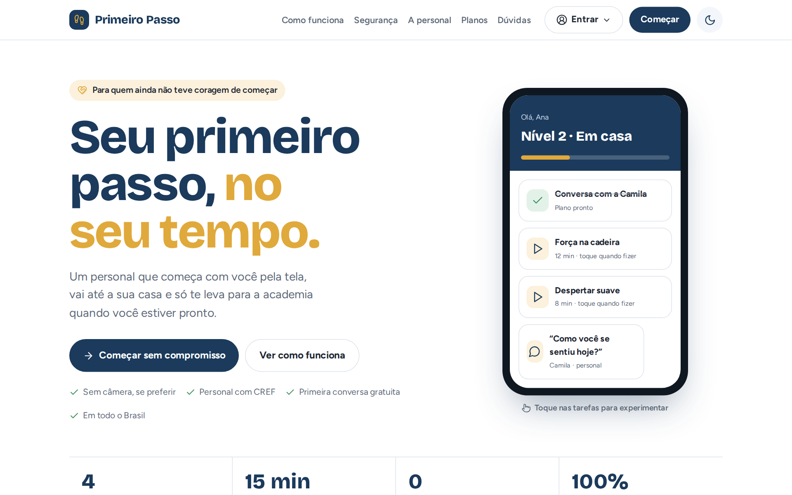

Onde você está na sua jornada?
As duas plataformas colocam um profissional de educação física ao seu lado. Escolha a que combina com o seu momento.
Primeiro Passo
Do primeiro "oi", pela tela, até a academia, com a mesma personal e no seu tempo.
- 4 níveis: online, em casa, ao ar livre e academia
- Sem câmera, se preferir, e sem fidelidade
- Primeira conversa grátis
PassosFit
O seu treino do dia no celular, com carga, repetições e a evolução de cada exercício.
- Treino montado pelo seu professor
- Veja quanto pegou da última vez e progrida
- Cardio, medidas e histórico em um lugar
| Primeiro Passo | PassosFit | |
|---|---|---|
| Você está | Parado, com medo ou sem saber por onde começar | Treinando na academia, com professor |
| Onde treina | Online, em casa, ao ar livre e, no fim, na academia | Na academia |
| Quem acompanha | A mesma personal, do começo ao fim | O seu professor, pelo painel dele |
| Para começar | Conversa grátis de 15 minutos | Acesso enviado pelo professor |
Seu primeiro passo, no seu tempo.
Um personal que começa com você pela tela, vai até a sua casa e só te leva para a academia quando você estiver pronto.


Quatro níveis. Você só sobe quando se sentir pronto.
A mesma personal acompanha você do começo ao fim. Os níveis 1 e 2 são online, para todo o Brasil.
Feito para quem acha que academia não é para si
Uma plataforma, três lados
Para o aluno
- Caminho passo a passo, com o próximo passo sempre à vista
- Treinos guiados, pausa para respirar e exercícios com demonstração
- Agenda, conversa com a personal e conquistas
Para a personal
- Alunos chegam com questionário de saúde e objetivos respondidos
- Alertas do dia, agenda, mensagens e indicação de exercícios
- Ganhos do mês e repasse direto na chave Pix
O PassosFit organiza o treino do dia, as cargas e a sua evolução.
Seu treino do dia, na palma da mão.
Marque cada série com carga e repetições, veja quanto pegou da última vez e acompanhe a sua evolução. Funciona no celular e no computador, direto pelo navegador.
bora treinar?
Tudo do treino em um lugar
Para o aluno e para o professor
Aluno
- Treino do dia já liberado ao abrir o app
- Séries marcadas com carga e repetições
- Cardio, agenda, histórico, cargas e medidas
Professor
- Painel com quem treinou e quem precisa de atenção
- Monta treinos com cerca de 250 exercícios e mapa muscular
- Divisão da semana, metas de cardio, perfil e pagamentos
- Assistente com IA para ajudar no dia a dia
O Primeiro Passo te leva do zero até a academia, no seu tempo.